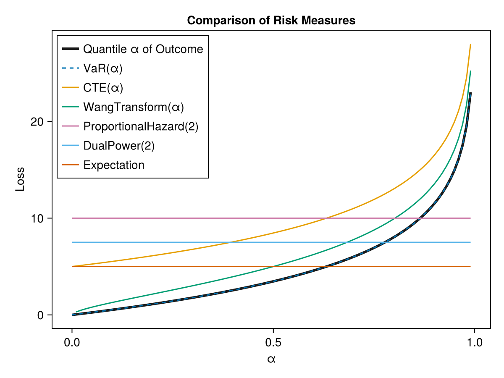

Risk Measures
Quickstart
outcomes = rand(100)
# direct usage
VaR(0.90)(outcomes) # ≈ 0.90
CTE(0.90)(outcomes) # ≈ 0.95
WangTransform(0.90)(outcomes) # ≈ 0.81
# construct a reusable object (functor)
rm = VaR(0.90)
rm(outcomes) # ≈ 0.90Introduction
Risk measures encompass the set of functions that map a set of outcomes to an output value characterizing the associated riskiness of those outcomes. As is usual when attempting to compress information (e.g. condensing information into a single value), there are multiple ways we can characterize this riskiness.
Coherence & Other Desirable Properties
Further, it is desirable that a risk measure has certain properties, and risk measures that meet the first four criteria are called "Coherent" in the literature. From "An Introduction to Risk Measures for Actuarial Applications" (Hardy), she describes as follows:
Using $H$ as a risk measure and $X$ as the associated risk distribution:
1. Translation Invariance
For any non-random $c$
\[H(X + c) = H(X) + c\]
This means that adding a constant amount (positive or negative) to a risk adds the same amount to the risk measure. It also implies that the risk measure for a non-random loss, with known value c, say, is just the amount of the loss c.
2. Positive Homogeneity
For any non-random $λ > 0$:
\[H(λX) = λH(X)\]
This axiom implies that changing the units of loss does not change the risk measure.
3. Subadditivity
For any two random losses $X$ and $Y$,
\[H(X + Y) ≤ H(X) + H(Y)\]
It should not be possible to reduce the economic capital required (or the appropriate premium) for a risk by splitting it into constituent parts. Or, in other words, diversification (ie consolidating risks) cannot make the risk greater, but it might make the risk smaller if the risks are less than perfectly correlated.
4. Monotonicity
If $Pr(X ≤ Y) = 1$ then $H(X) ≤ H(Y)$.
If one risk is always bigger then another, the risk measures should be similarly ordered.
Other Properties
In "Properties of Distortion Risk Measures" (Balbás, Garrido, Mayoral) also note other properties of interest:
Complete
Completeness is the property that the distortion function associated with the risk measure produces a unique mapping between the original risk's survival function $S(x)$ and the distorted $S*(x)$ for each $x$. See Distortion Risk Measures for more detail on this.
In practice, this means that a non-complete risk measure ignores some part of the risk distribution (e.g. CTE and VaR do not use the full distribution, so two risks that differ only outside the measured tail can produce the same value of the risk measure).
Exhaustive
A risk measure is "exhaustive" if it is coherent and complete.
Adaptable
A risk measure is "adapted" or "adaptable" if its distortion function (see Distortion Risk Measures) $g$ satisfies:
\[g\]
is strictly concave, that is, $g^\prime$ is strictly decreasing.\[\lim_{u\to 0^+} g^\prime(u) = \infty\]
and $\lim_{u\to 1^-} g^\prime(u) = 0$.
Adaptive risk measures are exhaustive but the converse is not true.
Summary of Risk Measure Properties
| Measure | Coherent | Complete | Exhaustive | Adaptable | Condition 2 |
|---|---|---|---|---|---|
| VaR | No | No | No | No | No |
| CTE | Yes | No | No | No | No |
| DualPower $(y > 1)$ | Yes | Yes | Yes | No | Yes |
| ProportionalHazard $(γ > 1)$ | Yes | Yes | Yes | No | Yes |
| WangTransform | Yes | Yes | Yes | Yes | Yes |
Distortion Risk Measures
Distortion Risk Measures (Wikipedia Link) are a way of remapping the probabilities of a risk distribution in order to compute a risk measure $H$ on the risk distribution $X$.
Adapting Wang (2002), there are two key components:
Distortion Function $g(u)$
This remaps values in the [0,1] range to another value in the [0,1] range, and in $H$ below, operates on the survival function $S$ and $F=1-S$.
Let $g:[0,1]\to[0,1]$ be an increasing function with $g(0)=0$ and $g(1)=1$. The transform $F^*(x)=g(F(x))$ defines a distorted probability distribution, where "$g$" is called a distortion function.
Note that $F^*$ and $F$ are equivalent probability measures if and only if $g:[0,1]\to[0,1]$ is continuous and one-to-one. Definition 4.2. We define a family of distortion risk-measures using the mean-value under the distorted probability $F^*(x)=g(F(x))$:
Risk Measure Integration
To calculate a risk measure $H$, we integrate the distorted $F$ across all possible values in the risk distribution (i.e. $x \in X$):
\[H(X) = E^*(X) = - \int_{-\infty}^0 g(F(x))dx + \int_0^{+\infty}[1-g(F(x))]dx\]
That is, the risk measure ($H$) is equal to the expected value of the distortion of the risk distribution ($E^*(X)$).
When risk is a continuous Distributions.jl distribution, this integral is evaluated by numerical quadrature of the distorted distribution function. When risk is an array of outcomes, the same Choquet integral reduces to a finite weighted sum of the sample's order statistics, and VaR, CTE, and Expectation evaluate that sum exactly (no quadrature or approximation error); the other distortion measures integrate the distorted empirical CDF numerically.
Examples
Basic Usage
outcomes = rand(100)
# direct usage
VaR(0.90)(outcomes) # ≈ 0.90
CTE(0.90)(outcomes) # ≈ 0.95
WangTransform(0.90)(outcomes) # ≈ 0.81
# construct a reusable object (functor)
rm = VaR(0.90)
rm(outcomes) # ≈ 0.90Comparison
We will generate a random outcome and show how the risk measures behave:
using Distributions
using ActuaryUtilities
using CairoMakie
outcomes = Weibull(1,5)
# or this could be discrete outcomes as in the next line
#outcomes = rand(LogNormal(2,10)*100,2000)
αs= range(0.00,0.99;length=100)
let
f = Figure()
ax = Axis(f[1,1],
xlabel="α",
ylabel="Loss",
title = "Comparison of Risk Measures",
xgridvisible=false,
ygridvisible=false,
)
lines!(ax,
αs,
[quantile(outcomes, α) for α in αs],
label = "Quantile α of Outcome",
color = :grey10,
linewidth = 3,
)
lines!(ax,
αs,
[VaR(α)(outcomes) for α in αs],
label = "VaR(α)",
linestyle=:dash
)
lines!(ax,
αs,
[CTE(α)(outcomes) for α in αs],
label = "CTE(α)",
)
lines!(ax,
αs[2:end],
[WangTransform(α)(outcomes) for α in αs[2:end]],
label = "WangTransform(α)",
)
lines!(ax,
αs,
[ProportionalHazard(2)(outcomes) for α in αs],
label = "ProportionalHazard(2)",
)
lines!(ax,
αs,
[DualPower(2)(outcomes) for α in αs],
label = "DualPower(2)",
)
lines!(ax,
αs,
[Expectation()(outcomes) for α in αs],
label = "Expectation",
)
axislegend(ax,position=:lt)
f
end
Optimal Transport & Robustness
A risk measure collapses a whole loss distribution to a single number. Optimal transport (OT) supplies the complementary half — the geometry between distributions: how far apart two risks are, how a rank-preserving stress moves every measure at once, whether a quarter-over-quarter change is real, and how much a risk measure can move under model error. In one dimension OT is closed form (transport is just rank matching), so these tools need no solver — they are sorting and quantile arithmetic layered on the same rm(risk) interface. For a broad treatment of optimal transport in an actuarial context, see Charpentier (2026), "Optimal Transport for Actuarial Science" ⟨hal-05684645⟩.
Distance between two risks — wasserstein
Where a risk measure says where a book sits, the Wasserstein distance says how far apart two books are, in the units of the loss and aware of the whole shape:
a = rand(LogNormal(log(1000) - 0.18, 0.6), 100_000)
b = rand(LogNormal(log(1150) - 0.32, 0.8), 100_000) # higher mean + fatter tail
wasserstein(a, b) # ≈ 210 average claim displacement (W₁, in \$)
wasserstein(a, b; p=2) # ≈ 480 W₂ penalizes the tail move moreIt also accepts Distributions.UnivariateDistributions directly, e.g. wasserstein(Normal(0, 1), Normal(3, 1)) == 3.
One stress drives the whole panel — transportmap / pushforward
Rather than stressing each measure separately, define one rank-preserving transport map, push the book through it, and recompute every measure consistently:
base_law = LogNormal(log(1000) - 0.18, 0.6) # the assumed base
T = transportmap(base_law, LogNormal(log(1300) - 0.32, 0.8)) # → target
sample = rand(base_law, 100_000)
stress = pushforward(sample, T)
for rm in (Expectation(), VaR(0.95), CTE(0.95), VaR(0.995), CTE(0.995))
println(rm, ": ", round(rm(sample)), " → ", round(rm(stress)))
endThe map is auditable ("we revalued each percentile") rather than a reshuffling of who is risky.
Distributionally robust risk measures — robustvalue
robustvalue(rm, sample; radius=r) is a robust version of rm over a Wasserstein ball of radius r — a governance dial in the units of the loss for "how bad could this number be if my book is off by up to r of transport cost?" For CTE(α) it is the exact worst case, attaining the sharp stability bound $|\mathrm{CTE}_\alpha(\mu)-\mathrm{CTE}_\alpha(\nu)| \le (1-\alpha)^{-1/p}\,W_p$; for every other measure it evaluates rm on a budget-exact adverse scenario inside the ball, which is a lower bound on the true worst case — a distinction that matters if the number feeds capital or model-risk governance:
base = rand(LogNormal(log(1000) - 0.18, 0.6), 200_000)
CTE(0.95)(base), robustvalue(CTE(0.95), base; radius=250) # ≈ (2980, 4100)
CTE(0.995)(base), robustvalue(CTE(0.995), base; radius=250) # ≈ (4890, 8430)Same $250 radius, a larger loading deeper in the tail — deep-tail capital is intrinsically more fragile to model error. Because robustvalue takes the risk measure as an argument it works for VaR, WangTransform, or any custom RiskMeasure (pass tail for measures without a natural tail level).
These tools also expose a structural fact about the measures. Where the loss density is thin near the quantile, a tiny transport move (small wasserstein) can swing VaR by a large amount, while CTE — a tail average — obeys the Lipschitz bound above. For capital that must be stable under model or portfolio perturbation, prefer CTE; if you must report VaR, check the density near the quantile.
Is a change real? — driftsignificance
A risk number that moved quarter-to-quarter may just be sampling noise. driftsignificance compares the observed wasserstein against the distances produced by random re-splits of the pooled data, so only moves that clear the noise floor are flagged:
q1 = rand(LogNormal(log(1000) - 0.18, 0.60), 4_000) # this quarter
q2 = rand(LogNormal(log(1030) - 0.19, 0.62), 4_000) # next quarter
ds = driftsignificance(q1, q2)
ds.distance, ds.threshold, ds.significant # e.g. (≈50, ≈28, true)(1) A distance or robustness number is only meaningful with its ground cost — absolute $, log/relative, or tail-weighted — so report the cost alongside. (2) These are distributional statements, not per-policyholder causal ones. (3) With atoms/ties (discrete losses, curtate lifetimes) the quantile convention matters. This module uses the inverse empirical cdf (a step function) throughout, matching the convention of VaR/CTE on samples, so the OT layer and the risk measures agree at ties; keep that in mind when comparing against tools that interpolate quantiles.
Discussion: how to read these numbers, and what is deliberately left out
Every verb above is objective — sorting and quantile arithmetic with no priors, no tuning knobs, and no solver. That is what keeps them auditable and exactly reproducible, and it is a deliberate scope choice. It also means each answers a narrower question than it might first appear, and driftsignificance is the one most worth thinking through before you lean on it.
A permutation test is a calibration, not a probability that the book changed. driftsignificance pools the two samples, re-splits them at random many times, and asks how large the observed wasserstein distance is relative to the distances those random re-splits produce. Its implied null hypothesis is that the two periods are drawn from exactly the same law. In practice that null is never literally true — books always drift a little — so a "significant" result really tells you the samples were large enough to detect some change, not that the change is material. The pvalue is P(distance this large | no drift), which is easy to misread as P(drift is real | data); they are not the same number, and in a governance setting the misread is the default. The noise floor exists for a concrete reason: the plug-in Wasserstein distance is biased upward in finite samples — wasserstein(x, y) between two samples of the same law is positive, not zero — so the permutation floor is best understood as a bias correction for that estimator rather than as a hypothesis-testing ritual.
What a subjective (Bayesian) treatment would add — and why it is future work. The question a capital or experience committee usually wants answered is not "is there any drift?" but "how big is the drift, with what uncertainty, and is it past a materiality threshold?" — a statement about effect size, not a point-null rejection. A Bayesian approach targets that directly: place a model (or a nonparametric Bayesian bootstrap — Dirichlet weights on the observations, for which the weighted one-dimensional Wasserstein distance is still closed form) over each period and report a posterior over the drift distance, from which a credible interval and P(distance > materiality) follow immediately. It would also let you borrow information across a history of quarters and handle the many-blocks, many-quarters multiplicity that makes any fixed-threshold flag trip on a predictable fraction of stable books. These methods are intentionally not part of the current release: they introduce priors and modelling choices that belong in a user's hands rather than baked into a library primitive, and the permutation test and a Bayesian posterior answer genuinely different questions (a calibration reference versus effect-size uncertainty). Treat the boolean significant flag as a screen, and — as the docstring warns — pin a seeded rng for any figure of record.
Multivariate risks need a solver. Everything here is one-dimensional, where optimal transport is closed form (transport is rank matching). Genuinely joint risks — mortality × lapse, equity × rates, several lines of business at once — are not: in more than one dimension the transport map is no longer a sorted matching and requires an actual OT solve. That capability is a natural future extension (dispatched on multivariate inputs, lit up when a package such as OptimalTransport.jl is loaded), and it is a real addition rather than a re-wrapping of the exact 1-D routines. Note that robustvalue does not generalize for free: its "shift the tail mass outward by Δ" form is intrinsically a one-dimensional tail result, and the multivariate worst case over a Wasserstein ball is a separate optimization problem.
API
Exported API
ActuaryUtilities.RiskMeasures.CTE — Type
CTE(α)::RiskMeasure
CTE(α)(risk)::T (where T is the type of values sampled in risk)The Conditional Tail Expectation (CTE) at level α is the expected value of the risk distribution above the αth quantile. risk can be a univariate distribution or an array of outcomes. Assumes more positive values are higher risk measures, so a higher p will return a more positive number.
CTE(α) returns a functor which can then be called on a risk distribution.
Parameters
- α: [0,1.0)
Examples
julia> CTE(0.95)(rand(1000))
0.9766218612020593
julia> rm = CTE(0.95)
CTE{Float64}(0.95)
julia> rm(rand(1000))
0.9739835010268733ActuaryUtilities.RiskMeasures.DualPower — Type
DualPower(v)::RiskMeasure
DualPower(v)(risk)::T (where T is the type of values sampled in risk)The Dual Power distortion risk measure is defined as $1 - (1 - x)^v$, where x is the cumulative distribution function (CDF) of the risk distribution and v is a positive parameter. risk can be a univariate distribution or an array of outcomes.
DualPower(v) returns a functor which can then be called on a risk distribution.
ActuaryUtilities.RiskMeasures.Expectation — Type
Expectation()::RiskMeasure
Expectation()(risk)::T (where T is the type of values sampled in `risk`)The expected value of the risk.
Expectation() returns a functor which can then be called on a risk distribution.
Examples
julia> Expectation()(rand(1000))
0.4793223308812537
julia> rm = Expectation()
ActuaryUtilities.RiskMeasures.Expectation()
julia> rm(rand(1000))
0.4941708036889741ActuaryUtilities.RiskMeasures.ProportionalHazard — Type
ProportionalHazard(y)::RiskMeasure
ProportionalHazard(y)(risk)::T (where T is the type of values sampled in risk)The Proportional Hazard distortion risk measure is defined as $x^(1/y)$, where x is the cumulative distribution function (CDF) of the risk distribution and y is a positive parameter. risk can be a univariate distribution or an array of outcomes. ProportionalHazard(y) returns a functor which can then be called on a risk distribution.
Examples
julia> ProportionalHazard(2)(rand(1000))
0.6659603556774121
julia> rm = ProportionalHazard(2)
ProportionalHazard{Int64}(2)
julia> rm(rand(1000))
0.6710587338367799ActuaryUtilities.RiskMeasures.VaR — Type
VaR(α)::RiskMeasure
VaR(α)(risk)::T (where T is the type of values sampled in `risk`)The αth quantile of the risk distribution is the Value at Risk, or αth quantile. risk can be a univariate distribution or an array of outcomes. Assumes more positive values are higher risk measures, so a higher p will return a more positive number. For a discrete risk, the VaR returned is the first value above the αth percentile.
VaR(α) returns a functor which can then be called on a risk distribution.
Parameters
- α: [0,1.0)
Examples
julia> VaR(0.95)(rand(1000))
0.9561843082268024
julia> rm = VaR(0.95)
VaR{Float64}(0.95)
julia> rm(rand(1000))
0.9597070153670079ActuaryUtilities.RiskMeasures.WangTransform — Type
WangTransform(α)::RiskMeasure
WangTransform(α)(risk)::T (where T is the type of values sampled in risk)The Wang Transform is a distortion risk measure that transforms the cumulative distribution function (CDF) of the risk distribution using a normal distribution with mean Φ⁻¹(α) and standard deviation 1. risk can be a univariate distribution or an array of outcomes.
WangTransform(α) returns a functor which can then be called on a risk distribution.
Parameters
- α: [0,1.0]
In the literature, sometimes λ is used where $\lambda = \Phi^{-1}(\alpha)$.
Examples
julia> WangTransform(0.95)(rand(1000))
0.8799465543360105
julia> rm = WangTransform(0.95)
WangTransform{Float64}(0.95)
julia> rm(rand(1000))
0.8892245759705852References
- "A Risk Measure That Goes Beyond Coherence", Shaun S. Wang, 2002
ActuaryUtilities.OptimalTransport.driftsignificance — Method
driftsignificance(a, b; p=1, nperm=1000, level=0.9, rng=Random.default_rng())Test whether the Wasserstein distance between samples a and b is larger than sampling noise alone would produce. The two samples are pooled and repeatedly re-split at random; the observed wasserstein(a, b; p) is then compared against this permutation distribution. A raw distance is meaningless without such a reference — otherwise ordinary sampling wiggle is mistaken for real drift.
Returns a NamedTuple (; distance, threshold, pvalue, significant):
distance— the observedwasserstein(a, b; p)threshold— thelevelquantile of the permuted distances (the noise floor)pvalue— fraction of permuted distances ≥distance(add-one smoothed)significant—distance > threshold(equivalently,pvalue < 1 - levelup to add-one smoothing and ties)
The permutation floor is stochastic. With the default rng = Random.default_rng() the pvalue, threshold, and — for a borderline move — the significant flag will differ from run to run on identical data. For any governance/reporting decision, pass an explicitly seeded rng (e.g. rng = MersenneTwister(seed)) so the result is auditable and reproducible.
Example
julia> using Random
julia> a = randn(MersenneTwister(1), 2_000); b = randn(MersenneTwister(2), 2_000) .+ 1;
julia> ds = driftsignificance(a, b; nperm=500, rng=MersenneTwister(42));
julia> ds.significant # a full-σ shift clears the noise floor
trueActuaryUtilities.OptimalTransport.pushforward — Method
pushforward(sample, T)Apply a transport map T (e.g. from transportmap) to every element of sample, returning the transported (stressed) sample. Equivalent to T.(sample).
ActuaryUtilities.OptimalTransport.robustvalue — Method
robustvalue(rm::RiskMeasure, sample; radius, p=2, tail=<rm's α>)A distributionally robust (Wasserstein-DRO) value of risk measure rm over the p-Wasserstein ball of the given radius around the empirical distribution of sample. radius answers "how bad could this number be if my book is off by up to radius of transport cost?" and is a governance dial in the units of the loss. What is returned depends on the measure:
For
rm = CTE(α)withtail = α(the default) the result is the exact worst caseCTE(α)(sample) + radius * (1-α)^(-1/p), attaining the sharp stability bound\[|\mathrm{CTE}_\alpha(\mu) - \mathrm{CTE}_\alpha(\nu)| \le (1-\alpha)^{-1/p}\, W_p(\mu,\nu) .\]
The maximizing distribution moves exactly the worst
1-αof probability mass outward byradius * (1-α)^(-1/p), splitting the atom the tail boundary cuts through, and sits on the boundary of the ball.For any other risk measure the result is
rmevaluated on a concrete adverse scenario inside the ball: the tail order statistics $x_{(k)}, \dots, x_{(n)}$ — the same tail boundary $k$ thatVaRandCTEuse on a sample — are shifted outward byradius * (m/n)^(-1/p), wherem/nis the fraction of observations shifted, so the scenario costs exactlyradiusin $W_p$. This is a lower bound on the true worst case over the ball, not the supremum itself — treat it as a principled adverse scenario, not a proven maximum.
Because the exact CTE branch applies only when tail == rm.α, changing tail across that equality switches between the atom-splitting exact bound and the whole-atom adverse scenario; the returned value need not be continuous there.
The factor (1 - tail)^(-1/p) is the price of tail focus: deeper-tail capital is intrinsically more fragile to model error, so the same radius buys a larger loading at CTE(0.995) than at CTE(0.95).
Example
julia> s = rand(LogNormal(log(1000) - 0.18, 0.6), 200_000);
julia> CTE(0.95)(s), robustvalue(CTE(0.95), s; radius=250) # ≈ (2980, 4100)robustvalue takes the risk measure as an argument, so it works unchanged for VaR, WangTransform, or any custom RiskMeasure (supply tail for measures without a natural tail level).
ActuaryUtilities.OptimalTransport.transportmap — Method
transportmap(source, target)Return the rank-preserving optimal transport map T, where each of source, target may be a sample or a Distributions.UnivariateDistribution. T carries a value at rank $u = F_{source}(x)$ to the corresponding quantile of target:
\[T(x) = Q_{target}(F_{source}(x)) .\]
In one dimension this monotone map is the (Brenier) optimal transport map. Pushing a source sample through T — see pushforward — yields a sample distributed as target while preserving each observation's rank, which makes T a natural, auditable stress / scenario transform: one map revalues every quantile consistently rather than reshuffling which outcomes are risky.
When both source and target are samples, order statistics are matched through the inverse empirical cdf, so for equally sized, tie-free samples pushforward(source, T) reproduces sort(target) exactly. Two qualifications: for unequally sized samples the result is the target's quantiles evaluated at the source's ranks rather than a permutation of target, and tied source values cannot be split by any deterministic map — every copy of a tied value transports to the same target quantile.
Example
julia> T = transportmap(Normal(0, 1), Normal(3, 1)); # a rigid +3 shift
julia> T(0.0), T(1.0)
(3.0, 4.0)ActuaryUtilities.OptimalTransport.wasserstein — Method
wasserstein(a, b; p=1, rtol=1e-6, atol=0, maxevals=nothing)The p-Wasserstein (optimal transport) distance between two one-dimensional risks. Each of a, b may be a sample (AbstractVector{<:Real}) or a Distributions.UnivariateDistribution.
In one dimension optimal transport is closed form: the distance is the $L^p$ norm of the gap between the two quantile functions,
\[W_p(a,b) = \left( \int_0^1 |Q_a(u) - Q_b(u)|^p \, du \right)^{1/p} .\]
For two equally sized samples this is exactly the sorted, point-by-point matching mean(abs.(sort(a) .- sort(b)).^p)^(1/p); for unequally sized samples the two step quantile functions are integrated exactly over their merged probability breakpoints — in both cases no solver is required and no approximation is made. Unlike divergence-based distances (KL, $\chi^2$) the Wasserstein distance is expressed in the units of the risk itself and is aware of the geometry of the outcome space: a $10k loss is closer to $11k than to $1M.
Examples
julia> wasserstein([1, 2, 3], [4, 5, 6]) # a rigid $3 shift
3.0
julia> wasserstein(Normal(0, 1), Normal(3, 1)) # translation ⇒ W_p = 3
3.0
julia> wasserstein(Normal(0, 1), Normal(0, 2); p=2) # same mean, |σ₁-σ₂|
1.0See also transportmap, driftsignificance, robustvalue.
For risks involving a distribution, the quantile integral is evaluated adaptively. rtol, atol, and maxevals control that calculation. By default the evaluation budget scales with the number of empirical quantile segments; an explicit maxevals is a hard cap. If the requested tolerance cannot be verified, wasserstein throws rather than returning an unconverged approximation. For distributional p=Inf, this includes empirical-versus-bounded-distribution cases whose supremum is not certified within the evaluation budget. Infinite distance is returned only when proved by support bounds or a supported analytic family; unresolved same-side-unbounded pairs throw rather than relying on tail growth heuristics.
References
- "Optimal Transport for Actuarial Science", Arthur Charpentier, 2026. ⟨hal-05684645⟩
Unexported API
ActuaryUtilities.RiskMeasures.cdf_func — Method
cdf_func(risk)Returns the appropriate cumulative distribution function depending on the type, specifically:
cdf_func(S::AbstractArray{<:Real}) = StatsBase.ecdf(S)
cdf_func(S::Distributions.UnivariateDistribution) = x -> Distributions.cdf(S, x)ActuaryUtilities.RiskMeasures.g — Method
g(rm::RiskMeasure,x)The probability distortion function associated with the given risk measure.